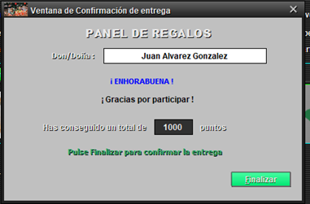

Para finalizar el proceso de compra, tenemos que eliminar o confirmar los artículos que queremos o que no queremos, respectivamente.
Una vez realizado esto (podemos visualizar el pedido pulsando en el ojo de arriba a la izquierda, solo aparecen los artículos confirmados),
hacemos click en el botón Continuar y ya estaría el pedido realizado. Hay que tener en cuenta de que se puede finalizar el pedido perdiendo
puntos (se tiene que comprar uno al menos), la aplicación nos preguntará si queremos confirmar la pérdida de esos puntos.
